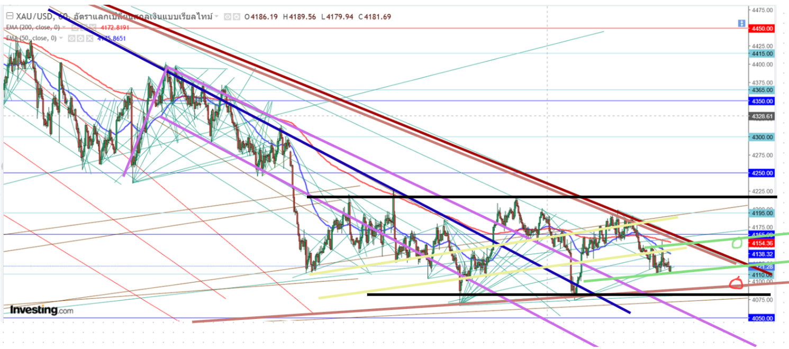

ประเมิน XAUUSD วันที่ 21/10/69 ช่วงเช้า ชนะติด ย่อพอหรือยัง ? ไทม์เฟรม เดย์ ยังเป็นขาขึ้น แต่กราฟอาจย่อลึกเพื่อขึ้นต่อ แท่งแดง เนื้อเทียนไม่ตํ่ากว่าไส้เทียนแท่งก่อนหน้า ชนแนวรับสำคัญ 4250 แล้วยกตัวขึ้น (ยังไม่ปิดแท่ง) จุดที่น่าสนใจ ระยะกลางยังไม่หลุด Falling Wedge (เส้นสีเทาและนํ้าตาล) Sideway (เส้นสีดำ) ที่น่าสนใจ ใกล้เคียงFibo 78.6% (แนวรับ 4165 เส้นแดง) อาจรับอยู่ ฟอร์มตัวเป็น Ascending Channels (สีเหลืองอ่อน)แล้วเริ่มยกตัว ระยะสั้นมีโอกาสย่อตัวไปที่ระหว่าง 4110 (วงกลมสีแดง) แล้วเริ่มย่อตัว ไทม์เฟรม เฮชหนึ่ง กราฟกำลังฟอร์มตัวเป็น Bullish Flag (เส้นสีม่วงเข้ม เทา) รอยืนยัน 1 จุด ฟอร์มตัวเป็น Ascending Channels (สีเหลืองและเขียว)Side way(สีดำ) Symmetrical Triangle (เส้นสีนํ้าตาลอ่อน) ถ้าไม่หลุดมีโอกาส ยกตัวไปที่ ขอบบน Ascending Channels (สีเขียว) 4160 วงกลมเขียว ย่อตัวไปที่ ขอบล่าง Symmetrical Triangle (เส้นสีนํ้าตาลอ่อน) 4100 วงกลมแดง ควรมองหาจังหวะ Sell และ Buy สั้น ๆ แนวรับ 4100 3935 แนวต้าน 4250 4350 ข้อควรระวัง 1. สร้าง High และ Low แล้ว เพื่อน ๆ คิดเห็นอย่างไรกันบ้างฝากกดไลค์ กดแชร์ กดติดตาม เป็นกำลังใจให้ด้วยนะครับ

ภาพที่ 1: โครงสร้างหลักและแนวโน้มราคาทองคำในภาพกว้าง

ภาพที่ 2: เจาะลึกกรอบราคาและโซนกลยุทธ์ระยะสั้น-กลาง
- แนวรับหลัก: โซน 4250
- แนวต้านหลัก: โซน 4300